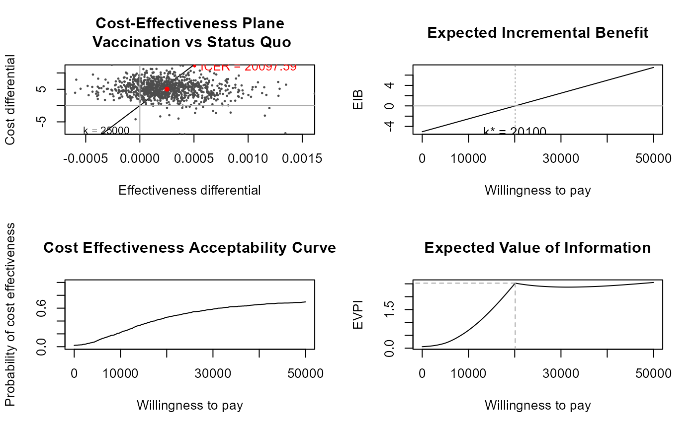
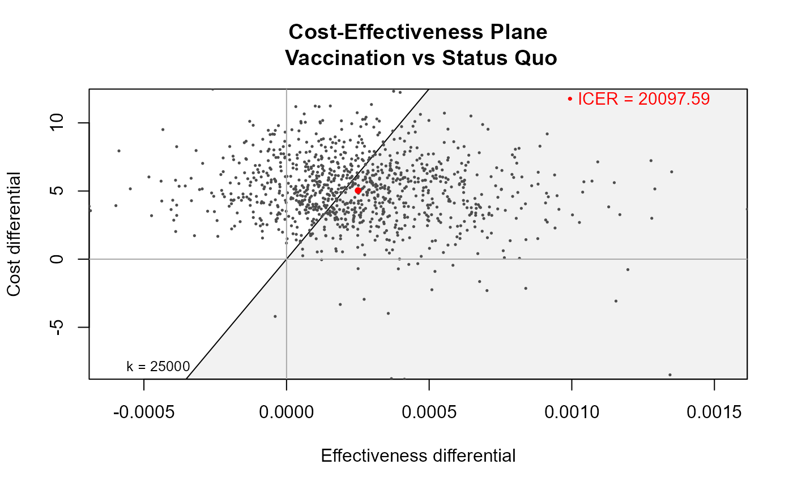
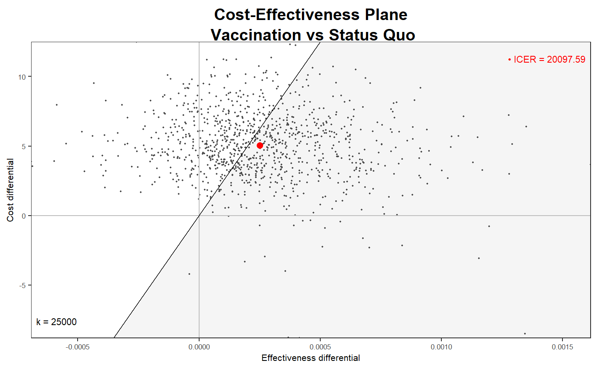
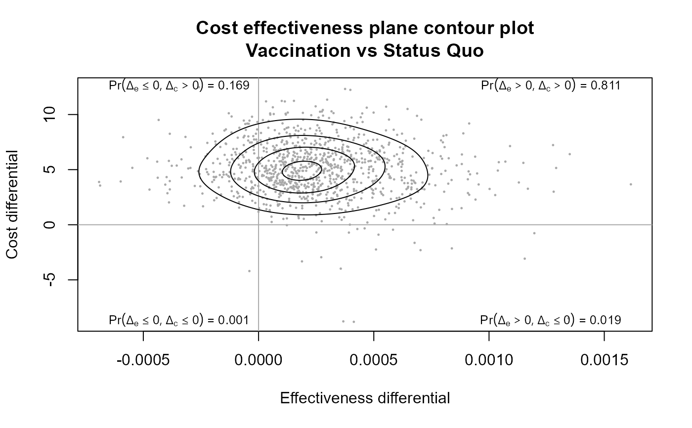
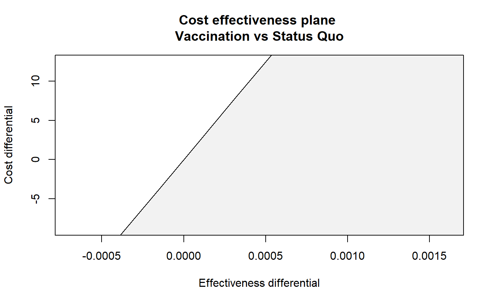
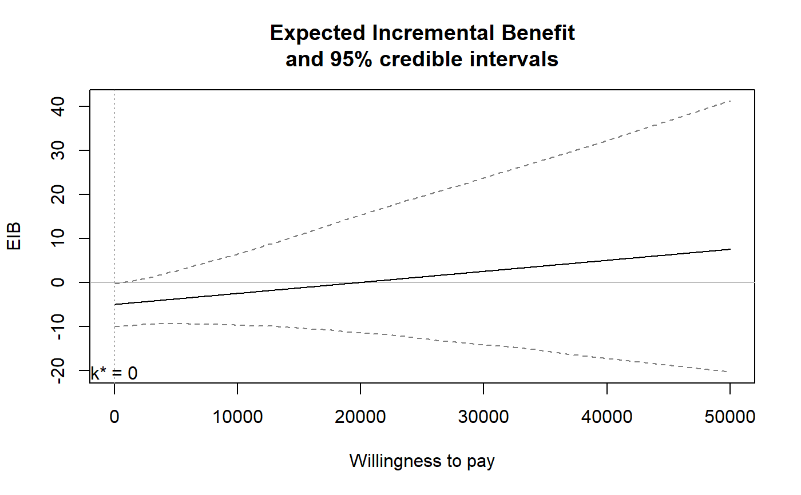
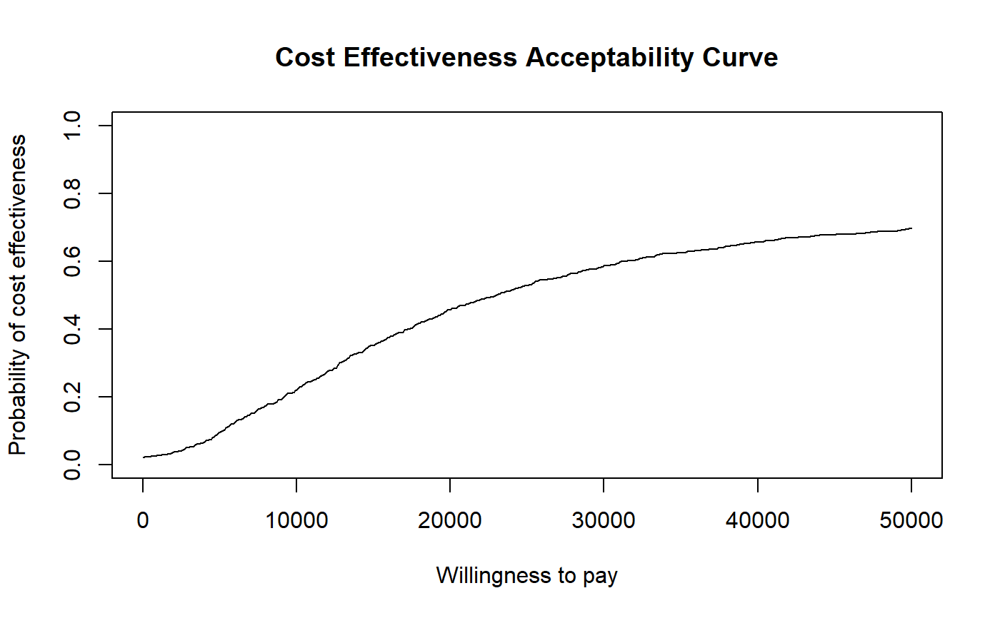
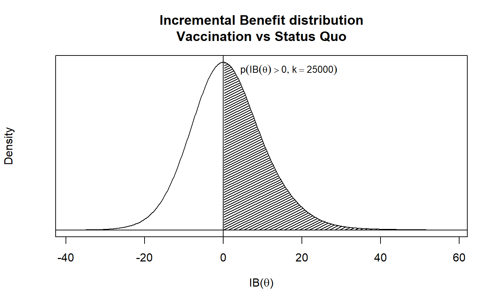

Cost-effectiveness analysis based on the results of a simulation model for a variable of clinical benefits (e) and of costs (c). Produces results to be post-processed to give the health economic analysis. The output is stored in an object of the class "bcea".
bcea( e, c, ref = 1, interventions = NULL, .comparison = NULL, Kmax = 50000, wtp = NULL, plot = FALSE )
| e | An object containing |
|---|---|
| c | An object containing |
| ref | Defines which intervention (columns of |
| interventions | Defines the labels to be associated with each
intervention. By default and if |
| Kmax | Maximum value of the willingness to pay to be considered.
Default value is |
| wtp | A(n optional) vector wtp including the values of the willingness to pay grid. If not specified then BCEA will construct a grid of 501 values from 0 to Kmax. This option is useful when performing intensive computations (e.g. for the EVPPI). |
| plot | A logical value indicating whether the function should produce the summary plot or not. |
| comparison | Selects the comparator, in case of more than two
interventions being analysed. Default as NULL plots all the comparisons
together. Any subset of the possible comparisons can be selected (e.g.,
|
An object of the class "bcea" containing the following elements
Number of simulations produced by the Bayesian model
Number of interventions being analysed
Number of possible pairwise comparisons
For each possible comparison, the differential in the effectiveness measure
For each possible comparison, the differential in the cost measure
The value of the Incremental Cost-Effectiveness Ratio
The maximum value assumed for the willingness to pay threshold
The vector of values for the grid approximation of the willingness to pay
The value for the Cost-Effectiveness Acceptability Curve, as a function of the willingness to pay
The distribution of the Incremental Benefit, for a given willingness to pay
The value for the Expected Incremental Benefit, as a function of the willingness to pay
The grid approximation of the break even point(s)
A vector containing the numeric label of the intervention that is the most cost-effective for each value of the willingness to pay in the selected grid approximation
An array including the value of the expected utility for each simulation from the Bayesian model, for each value of the grid approximation of the willingness to pay and for each intervention being considered
An array including the value of information for each simulation from the Bayesian model and for each value of the grid approximation of the willingness to pay
An array including the maximum "known-distribution" utility for each simulation from the Bayesian model and for each value of the grid approximation of the willingness to pay
An array including the opportunity loss for each simulation from the Bayesian model and for each value of the grid approximation of the willingness to pay
The vector of values for the Expected Value of Information, as a function of the willingness to pay
A vector of labels for all the interventions considered
The numeric index associated with the intervention used as reference in the analysis
The numeric index(es) associated with the intervention(s) used as comparator(s) in the analysis
The step used to form the grid approximation to the willingness to pay
The e matrix used to generate the object (see Arguments)
The c matrix used to generate the object (see Arguments)
Baio, G., Dawid, A. P. (2011). Probabilistic Sensitivity Analysis in Health Economics. Statistical Methods in Medical Research. doi:10.1177/0962280211419832.
Baio G. (2012). Bayesian Methods in Health Economics. CRC/Chapman Hall, London.
# See Baio G., Dawid A.P. (2011) for a detailed description of the # Bayesian model and economic problem # Load the processed results of the MCMC simulation model data(Vaccine) # Runs the health economic evaluation using BCEA m <- bcea(e=e, c=c, # defines the variables of # effectiveness and cost ref=2, # selects the 2nd row of (e,c) # as containing the reference intervention interventions=treats, # defines the labels to be associated # with each intervention Kmax=50000, # maximum value possible for the willingness # to pay threshold; implies that k is chosen # in a grid from the interval (0,Kmax) plot=TRUE # plots the results )# Creates a summary table summary(m, # uses the results of the economic evaluation # (a "bcea" object) wtp=25000 # selects the particular value for k )#> #> Cost-effectiveness analysis summary #> #> Reference intervention: Vaccination #> Comparator intervention: Status Quo #> #> Optimal decision: choose Status Quo for k < 20100 and Vaccination for k >= 20100 #> #> #> Analysis for willingness to pay parameter k = 25000 #> #> Expected utility #> Status Quo -36.054 #> Vaccination -34.826 #> #> EIB CEAC ICER #> Vaccination vs Status Quo 1.2284 0.529 20098 #> #> Optimal intervention (max expected utility) for k = 25000: Vaccination #> #> EVPI 3.0287# \donttest{ # # Plots the cost-effectiveness plane using base graphics ceplane.plot(m, # plots the Cost-Effectiveness plane comparison=1, # if more than 2 interventions, selects the # pairwise comparison wtp=25000, # selects the relevant willingness to pay # (default: 25,000) graph="base" # selects base graphics (default) )# # Plots the cost-effectiveness plane using ggplot2 if(requireNamespace("ggplot2")){ ceplane.plot(m, # plots the Cost-Effectiveness plane comparison=1, # if more than 2 interventions, selects the # pairwise comparison wtp=25000, # selects the relevant willingness to pay # (default: 25,000) graph="ggplot2"# selects ggplot2 as the graphical engine ) # # Some more options ceplane.plot(m, graph="ggplot2", pos="top", size=5, ICER.size=1.5, label.pos=FALSE, opt.theme=ggplot2::theme(text=ggplot2::element_text(size=8)) ) }#> Warning: Duplicated aesthetics after name standardisation: colour#> Warning: Ignoring unknown parameters: geom, border, include, line_colour#> Warning: Ignoring unknown parameters: label.pos#> Warning: Duplicated aesthetics after name standardisation: colour#> Warning: Ignoring unknown parameters: geom, border, include, line_colour#> Warning: Ignoring unknown parameters: label.pos# Plots the contour and scatterplot of the bivariate # distribution of (Delta_e,Delta_c) contour(m, # uses the results of the economic evaluation # (a "bcea" object) comparison=1, # if more than 2 interventions, selects the # pairwise comparison nlevels=4, # selects the number of levels to be # plotted (default=4) levels=NULL, # specifies the actual levels to be plotted # (default=NULL, so that R will decide) scale=0.5, # scales the bandwidths for both x- and # y-axis (default=0.5) graph="base" # uses base graphics to produce the plot )# Plots the contour and scatterplot of the bivariate # distribution of (Delta_e,Delta_c) contour2(m, # uses the results of the economic evaluation # (a "bcea" object) wtp=25000, # selects the willingness-to-pay threshold xl=NULL, # assumes default values yl=NULL # assumes default values )#> Warning: the condition has length > 1 and only the first element will be used#> #> #>#> Error in xy.coords(x, y): 'list' object cannot be coerced to type 'double'# Using ggplot2 if (requireNamespace("ggplot2")) { contour2(m, # uses the results of the economic evaluation # (a "bcea" object) graph="ggplot2",# selects the graphical engine wtp=25000, # selects the willingness-to-pay threshold xl=NULL, # assumes default values yl=NULL, # assumes default values label.pos=FALSE # alternative position for the wtp label ) }#> Error in is.finite(x): default method not implemented for type 'list'# Plots the distribution of the Incremental Benefit ib.plot(m, # uses the results of the economic evaluation # (a "bcea" object) comparison=1, # if more than 2 interventions, selects the # pairwise comparison wtp=25000, # selects the relevant willingness # to pay (default: 25,000) graph="base" # uses base graphics )#> Error in he$ib[w, ]: incorrect number of dimensions# # Produces a plot of the CEAC against a grid of values for the # willingness to pay threshold ceac.plot(m)# Plots the Expected Value of Information for the "bcea" object m evi.plot(m)# }